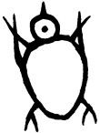

何謂兩棲類

青蛙、蟾蜍是大家都很熟悉的兩棲類動物，但兩棲類究竟是什麼？而兩棲類又包括什麼？
兩棲綱（Class Amphibia）主要可用尾巴及四肢的有無來分類：青蛙、蟾蜍是屬於無尾巴、有四肢的無尾目（Order Anura），約有三千五百多種；另外，有尾巴又有四肢的蠑螈、山椒魚則是屬於有尾目（Order Caudata），約有三百五十餘種；最後是有尾巴卻無四肢、長的像蚯蚓的無足目（Order Apoda），以蚓螈為代表，僅一百六十多種。
兩棲類的過渡性質
所有做生意的人都希望可以財源廣進，所以會在自家或店面放置一些招財祈福的吉祥物例如：財神爺、金元寶， 甚至隨著哈日風而擺設招財貓。但是你有沒有注意到還有人會放一種口含錢幣，身旁一堆金銀珠寶的蟾蜍。 這種蟾蜍被視為一種神獸，香港人稱之為催吉蟾蜍。相傳為劉海仙人的座下神獸，能增加民間百姓的財運， 所以牠是一種旺財的神獸。